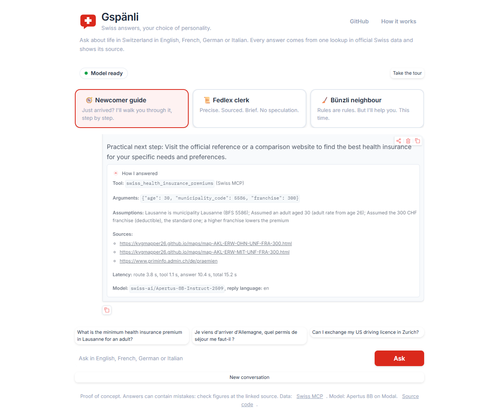
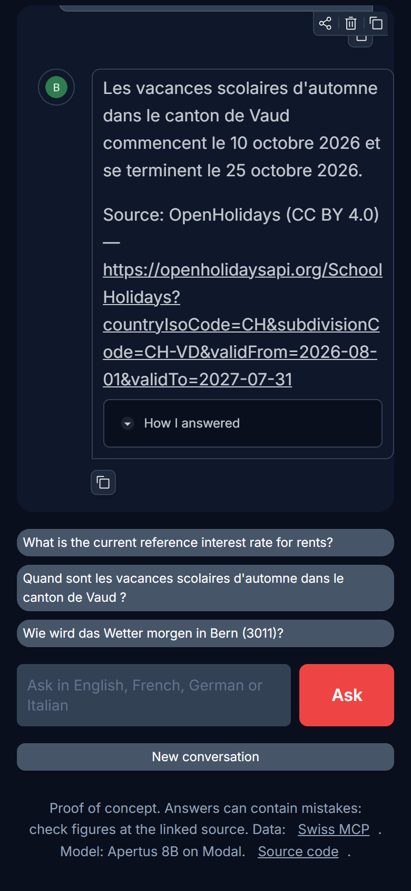

Swiss answers, your choice of personality.
Ask about life in Switzerland in English, French, German or Italian. Every answer comes from one lookup in official Swiss data, written by Apertus, the Swiss open model, and shows its source.
The model sleeps when nobody uses it. Clicking wakes it up; the first answer takes about 2 minutes, the next ones a few seconds.

Ask in your language, grounded in official sources in theirs.
Swiss sources come in German, French and Italian. You ask in any of the four languages and get the answer in yours.
What is the minimum health insurance premium in Lausanne for an adult?
Quand sont les vacances scolaires d'automne dans le canton de Vaud ?
Wie viel Mehrwertsteuer zahle ich auf ein Paket im Wert von 200 Franken?
Chi può votare alle elezioni del Consiglio nazionale?
Same facts, three voices.
A personality is one YAML file: a prompt, its favourite tools and three example questions. Adding a file adds a personality.
Newcomer guide
Just arrived? I'll walk you through it, step by step.
- Residence permits
- Health insurance premiums
- Housing and driving licence
Fedlex clerk
Precise. Sourced. Brief. No speculation.
- Federal political rights
- Parcel import VAT
- Saved official pages
Bünzli neighbour
Rules are rules. But I'll help you. This time.
- Rent reference rate
- Waste and housing rules
- Weather and school holidays
How it works
Two calls to an open model and one call to a Swiss data server, for every question. No native tool calling needed, so any open model can do it.
Route
Apertus reads the question and picks one tool from the Swiss MCP server, returning strict JSON with the arguments.
Resolve and look up
The app fixes what a small model cannot know: "Losanna" becomes municipality 5586, and an age is only used if you wrote one. Then one lookup in official data.
Answer
Apertus answers in the chosen voice and your language, using only the lookup result. The source links come from the data, not from the model.
See how I answered.
Every answer has a panel that shows its work, so you can check it.
- The tool and the exact arguments sent to it
- Assumptions, for example a default age or franchise
- The official sources, as links
- Latency per step and the model used

Why prompting, not finetuning
The goal was distinct personalities on top of reliable facts. A finetune would need hundreds of good in-character, multilingual, grounded answers per personality and a GPU budget to train and evaluate them. A system prompt gives the same voice control for free, changes in seconds, and keeps facts out of the weights where they would go stale. The real problems we hit, like wrong language detection or invented ages, were fixed in code, not in weights.
Grüezi, give it a try.
No account, no install. Answers can contain mistakes, so check figures at the linked source.